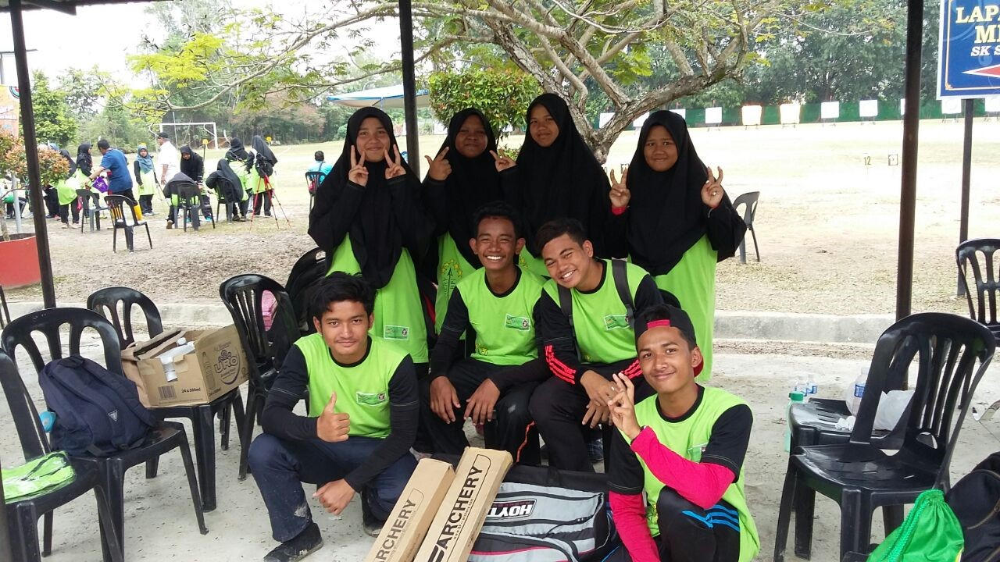

ARCHERY TEAM: My experiences is Archery,actually I am not very active in sports but when I at form 2 I be school representative selected by my teacher to participate in archery to play in Majlis Sukan Daerah Hulu Selangor and from that I became more interested in this sports.I start playing archery from form 2 until now because this sports is teach me to be more patient and control my mental to be more calm.This sport also can make my arm more strong and my stamina be build up.My team is the first team in my school in archery playing in MSSD and get number two.The result that us did it make me more spirit and love to play archery.I also love to play takraw because I think takraw is traditional sports in Malaysia.so I as a local people,I must support the traditonal sport to my country.